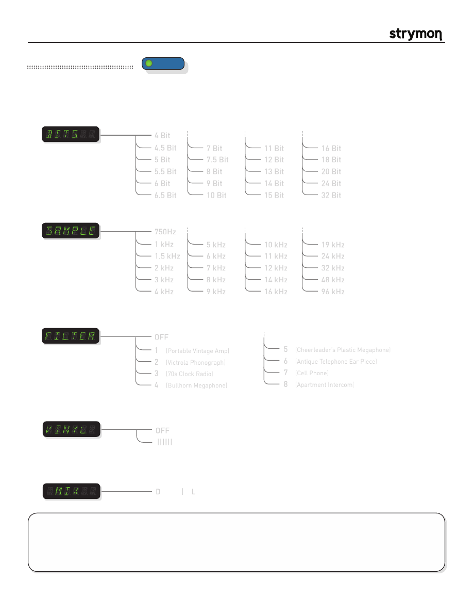

Mobius
-
User Manual
®
pg 18
TYPE
push (bank/BPM)
hold (save)
push (param)
hold (global)
VALUE
PARAM 1
PARAM 2
B
TAP
A
SPEED
DEPTH
LEVEL
BANK DOWN
BANK UP
FILTER
DESTROYER
VIBE
ROTARY
FLANGER
PHASER
CHORUS
FORMANT
AUTOSWELL
VINTAGE TREM
PATTERN TREM
QUADRATURE
®
Mod Machines: Destroyer
An intricate tool to mangle your audio. The speed knob controls rotational speed of the virtual record for the Vinyl effect.
PARAMETERS:
Sample Rate
:
Selects the sample rate from 96 KHz to 750Hz. As the sample rate is reduced, aliasing artifacts
damage the fidelity of the signal.
750Hz
1 kHz
1.5 kHz
2 kHz
3 kHz
4 kHz
5 kHz
6 kHz
7 kHz
8 kHz
9 kHz
10 kHz
11 kHz
12 kHz
14 kHz
16 kHz
19 kHz
24 kHz
32 kHz
48 kHz
96 kHz
Bit Depth
:
Reduces the digital bit depth from 32 bits down to 4 bits. Fuzzy crunchy artifacts are introduced as
the bit depth is reduced.
4 Bit
4.5 Bit
5 Bit
5.5 Bit
6 Bit
6.5 Bit
7 Bit
7.5 Bit
8 Bit
9 Bit
10 Bit
11 Bit
12 Bit
13 Bit
14 Bit
15 Bit
16 Bit
18 Bit
20 Bit
24 Bit
32 Bit
D | L
Mix:
Mixes the lo-fi (bit and sample-rate dependent) signal with the full resolution signal. Heinously
corrupted audio can sit on top of the full resolution signal. Set to full lo-fi mix for just destroyed
signal.
Filter Shape
:
A collection of filters inspired by telephones, victrolas, am radios, bull horns, and other gadgets.
The mixed lofi and full-resolution signal (along with any dVinyl noise) goes through the selected
filter.
OFF
1
(Portable Vintage Amp)
2
(Victrola Phonograph)
3
(70s Clock Radio)
4
(Bullhorn Megaphone)
5
(Cheerleader’s Plastic Megaphone)
6
(Antique Telephone Ear Piece)
7
(Cell Phone)
8
(Apartment Intercom)
||||||
Vinyl:
Our dVinyl technology introduces random vinyl dust noise and scratches from a 33 1/3 to 78 rpm
record. Effect speed determines the rotational speed of the record.
OFF
TIPS & TRICKS:
Change your sonic landscape and add some instant atmosphere with the FILTER parameter. The
FILTER parameter can be a powerful tone-shaping element just used on its own.
The DEPTH knob introduces Vinyl warping that tracks the record speed set by the Speed knob. Add some warping in
conjunction with the dVinyl noise for an authentic old-school vinyl experience.